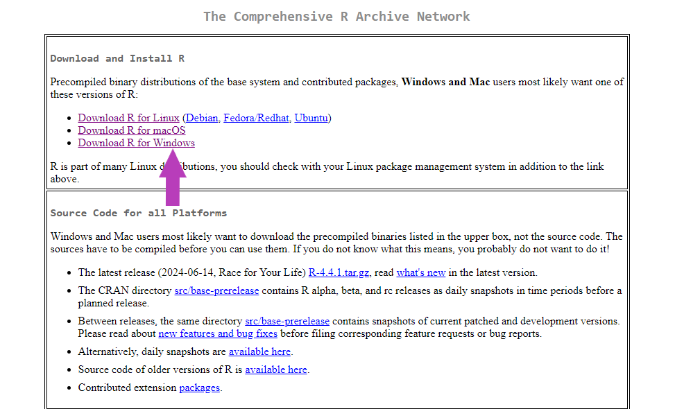
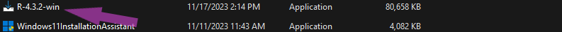
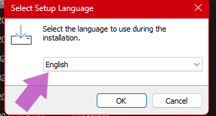
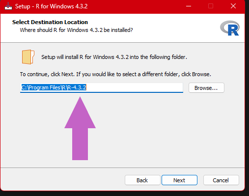
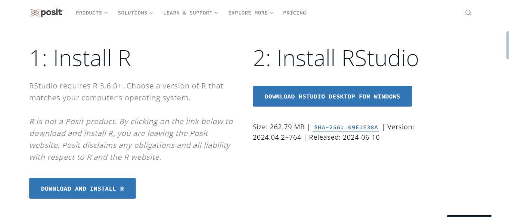

print("Welcome to R programming")[1] "Welcome to R programming"R and Rstudio, Installation, Windows installation, Linux installation, macOS installation, Rstudio installation, Rstudio GUI
Welcome to this R programming tutorial! R is a powerful tool for statistical analysis and data science, and best of all—it’s free and open-source.
Built with statisticians and data scientists in mind, R is ideal for statistical computing, data analysis, and handling large datasets. It’s cross-platform, running on Windows, macOS, and Linux, and can be integrated with big data tools like Hadoop and databases.
One of R’s strengths is data visualization. Whether you need static or interactive visualizations, R provides extensive customization through packages like ggplot2 and plotly. Plus, CRAN (the Comprehensive R Archive Network) offers over 18,000 packages, expanding R’s capabilities.
With a strong, active community, you’ll find plenty of support as you explore R’s features. So, let’s dive in and see what R can do!
To get started, you’ll need to install R, which sets up the language on your computer. However, for coding and managing your projects, we recommend using RStudio, a popular IDE designed for R.
The R is freely available for Windows, Mac and Linux operating systems from the Comprehensive R Archive Network (CRAN) website and R studio is available free for download at Rstudio-desktop
Make your way to the Comprehensive R Archive Network (CRAN) website and you will be greeted with the following page below

Choose the operating system that your using or your planning to install R on and follow along as below
Assuming you have made you way to the Comprehensive R Archive Network (CRAN) website.
Select the “Download R for windows option” as shown by the Arrow below in the image

After making the above selection, you will be brought to the next page below. Now click on “install R for the first time” which will take you to the next page.

This show be on your screen as shown below, all thats left to do is click on “Download R for Windows”, This should start your download of R.
Select a path to where you would like to download your R install exe
Please keep in mind to install an R version compatible with your system

After the download is complete you can browse to your downloads and find the R.exe downloaded file and open it to run it as seen in the images below

After it has launched, select your preferred language, accept the terms and conditions and follow the rest of the instructions given by the installer

NOTE: i would recommend you leave the default R set path to prevent any issues that may arise if your change the installation directory

Assuming you have made you way to the Comprehensive R Archive Network (CRAN) website.
To install R on macOS, follow these steps:
Download the R Installer:
.pkg file.Install R:
.pkg file.Verify the Installation:
Open the Terminal and type:
R --versionThis will display the installed R version, confirming the installation was successful.
Assuming you have made you way to the Comprehensive R Archive Network (CRAN) website.
To install R on a Linux distribution like Ubuntu, follow these steps:
Update the Package List:
Open your terminal and run
sudo apt-get updateInstall the base R system using the following command:
sudo apt-get install r-baseVerify the Installation:
R --versionAfter installing R, you can install RStudio, an Integrated Development Environment (IDE) for R. Follow the steps for your specific operating system. The website Auto detects your system and offers you the right package for your machine
Download RStudio :

.deb or .rpm file).Install RStudio:
For Ubuntu or Debian-based distributions, use:
sudo dpkg -i rstudio-x.y.z-amd64.debReplace x.y.z with the version number you downloaded.
For Red Hat or Fedora-based distributions, use:
sudo yum install rstudio-x.y.z-x86_64.rpmLaunch RStudio:
rstudio, or find it in your application menu.Download RStudio:
.dmg file.Install RStudio:
.dmg file.Launch RStudio:
Download RStudio:
.exe file.Install RStudio:
.exe file.Launch RStudio:
You’re now ready to start coding in R with RStudio!
Given the example code below,if you copy it and paste it into the scripting area as shown in the image above and press Run or hold Control + Return keys. it will show you the out put in the console area as shown the image above.. expect your output there
print("Welcome to R programming")[1] "Welcome to R programming"Well to start you off with the basics the first program by tradition in any programming language to write is the print("Hello world") but i think we live in modern times you can print whatever we want.Wait whats that? what does the print() function do?, well it prints out to the console whatever is passed into it as an argument.thats to say i could say any of these below and it would print them out.
print("How many programmers does it take to change a light bulb? None. It’s a hardware problem!")
print(" Why do programmers prefer dark mode? Because light attracts bugs!")
print("Why do Java developers wear glasses? Because they don’t see sharp!")
print("Why did the statistician bring a ladder to the bar? Because they heard the drinks were on the house!")
Lets give all the above a try below and see the output.
print("How many programmers does it take to change a light bulb? None. It’s a hardware problem!")[1] "How many programmers does it take to change a light bulb? None. It’s a hardware problem!"print(" Why do programmers prefer dark mode? Because light attracts bugs!")[1] " Why do programmers prefer dark mode? Because light attracts bugs!"print("Why do Java developers wear glasses? Because they don’t see sharp!")[1] "Why do Java developers wear glasses? Because they don’t see sharp!"print("Why did the statistician bring a ladder to the bar? Because they heard the drinks were on the house!")[1] "Why did the statistician bring a ladder to the bar? Because they heard the drinks were on the house!"print("Why did the statistician bring a ladder to the bar? Because they heard the drinks were on the house!")[1] "Why did the statistician bring a ladder to the bar? Because they heard the drinks were on the house!"I guess you now know what the print() function does and what an argument is. its whatever you input into the function
R is a powerful language for statistical computing and graphics. Understanding its basic syntax and structure will help you get started with writing and running R code effectively.
x <- 10 # Using the <- operator
y = 20 # Using the = operatorR supports several data types Numeric: Represents real numbers Integer: Represents whole numbers (use L suffix). Character: Represents text. Logical: Represents boolean values (TRUE or FALSE).
# This is a numeric
num <- 3.14
print(num)
# This is an int
int_num <- 42L
print(int_num)
# This is a character
text <- "Hello, R!"
print(text)
# this is a logical
flag <- TRUE
print(flag)[1] 3.14
[1] 42
[1] "Hello, R!"
[1] TRUER supports standard mathematical operations: Let x be 2 and y be 4.
# Assigning the values.
x <- 2
y <- 4Addition: +
# adding x and y
sum <- x + y
print(sum)[1] 6Subtraction: -
# getting there difference
difference <- x - y
print(difference)[1] -2Multiplication: *
# getting there product
product <- x * y
print(product)[1] 8Division: /
# dividing the two numbers
quotient <- x / y
print(quotient)[1] 0.5Exponentiation: ^
# raising x to the exponent of 2
power <- x ^ 2
print(power)[1] 4Modulus: %% (remainder after division)
# finding the remainder for the divison of x by y
remainder <- x %% y
print(remainder)[1] 2Objective: Get hands-on practice with comments, variables, data types, and basic math operations in R.
7. Comments
To write a comment in R programming we using the hash sign “#”. “what’s a comment i hear My soon to be R Wizard!” Well a comment is a way to tell R to ignore some input and not treat it as code. We use comments to leave our selves bread crumbs to follow in the future that explain exactly what assumptions were taken or what the code does.
Commenting is a very important part of R wizarding. You need to leave comments for yourself and maybe your team mates to read and understand what’s going on or why your did something in the code
Take a look at the examples below